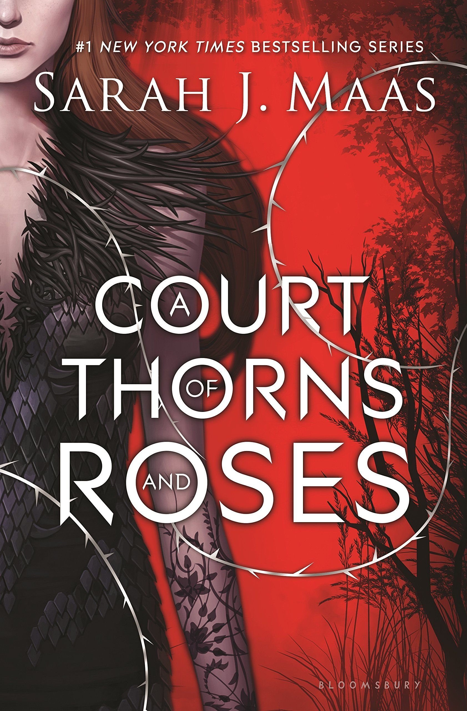

A Court of Thornes and Roses by Sarah J. Maas
Synopsis
When nineteen-year-old Feyre kills a wolf in the woods, a beast-like creature arrives to demand retribution for it. Dragged to a treacherous magical land she only knows about from legends, Feyre discovers that her captor is not an animal, but Tamlin-one of the lethal, immortal faeries who once ruled their world. As she dwells on his estate, her feelings for Tamlin transform from icy hostility into a fiery passion that burns through every lie and warning she's been told about the beautiful, dangerous world of the Fae. But an ancient, wicked shadow over the faerie lands is growing, and Feyre must find a way to stop it or doom Tamlin-and his world-forever.
Want this book?
You can buy it here.About Sarah J. Maas
Sarah J. Maas is the #1 New York Times and internationally bestselling
author of the Throne of Glass, Court of Thorns and Roses, and Crescent
City series. Her books have sold millions of copies and are published
in thirty-seven languages. Sarah lives with her husband, son, and
dog.
sarahjmaas.com
facebook.com/theworldofsarahjmaas
instagram.com/therealsjmaas